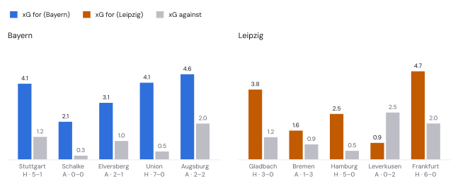
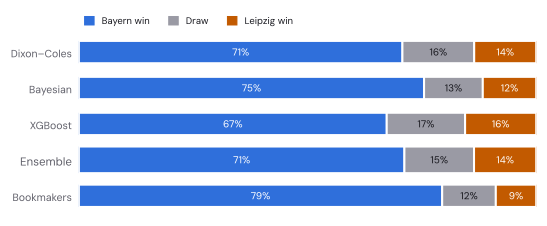
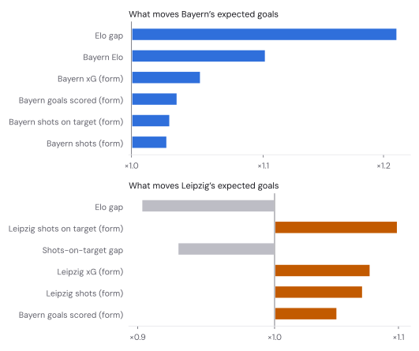
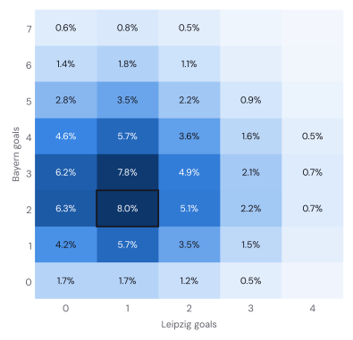
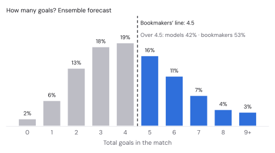
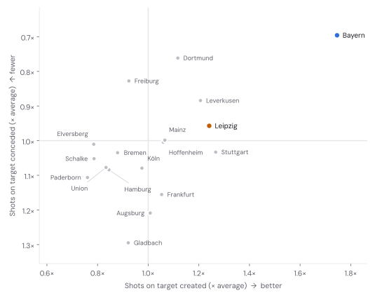
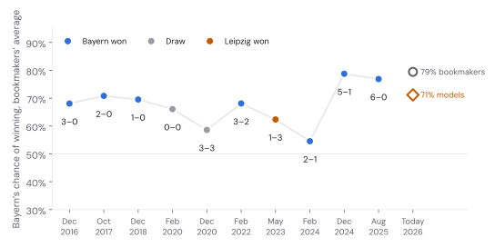
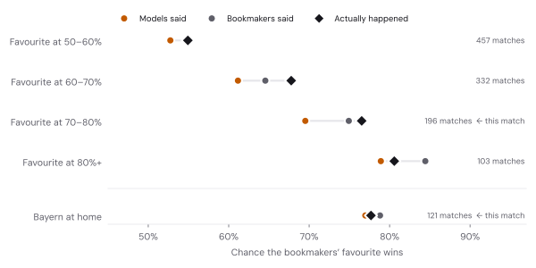
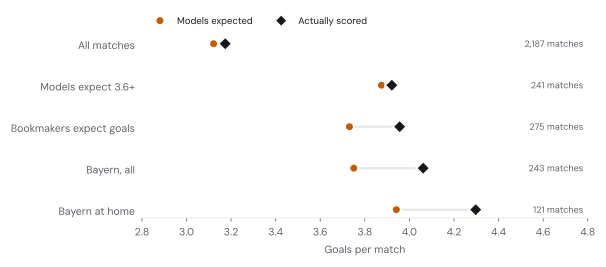
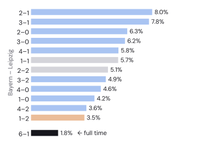

MATCHDAY 6 · FORECAST & FULL-TIME REVIEW
Bayern vs Leipzig: my models are scared of heights.
The bookmakers make Bayern [[mkt_H]] favourites and put the goals line at 4.5. My models say [[ens_H]], and fewer goals. Seven seasons of backtesting say the models are the ones with vertigo.
The short version
[[ens_lh]] – [[ens_la]] Most likely score [[mode]] ([[p_mode]]) Over 4.5 goals [[over45]] (bookies [[mkt_over45]]) [[btts]]
Bayern are big favourites in everybody’s numbers. My models give them [[ens_H]], with [[ens_D]] for a draw and [[ens_A]] for Leipzig. The are surer still at [[mkt_H]], and they expect goals. Their main over/under line is 4.5 goals. For a Bundesliga match the usual line is 2.5.
So my models are more cautious on both counts: [[gap_H]] percentage points less sure of a Bayern win, and [[over45]] for five or more goals against the bookmakers’ [[mkt_over45]]. Most of this post is about whether that caution is wisdom or nerves. Spoiler: nerves. Over [[bt_n]] past matches, my models have been too timid in exactly the two places this match lives: big favourites and goal-heavy games.
Forty goals in ten games
| 2026/27, matchdays 1–5 | Bayern | Leipzig |
|---|---|---|
| Position, points (W–D–L) | [[fcb_pos_ord]], [[fcb_pts]] ([[fcb_w]]–[[fcb_d]]–[[fcb_l]]) | [[rbl_pos_ord]], [[rbl_pts]] ([[rbl_w]]–[[rbl_d]]–[[rbl_l]]) |
| Goals for – against | [[fcb_gf]] – [[fcb_ga]] | [[rbl_gf]] – [[rbl_ga]] |
| for – against | [[fcb_xgf]] – [[fcb_xga]] | [[rbl_xgf]] – [[rbl_xga]] |
| At home: goals (xG) | [[fcb_home_gf]] – [[fcb_home_ga]] ([[fcb_home_xgf]] – [[fcb_home_xga]]) | [[rbl_home_gf]] – [[rbl_home_ga]] ([[rbl_home_xgf]] – [[rbl_home_xga]]) |
| Away: goals (xG) | [[fcb_away_gf]] – [[fcb_away_ga]] ([[fcb_away_xgf]] – [[fcb_away_xga]]) | [[rbl_away_gf]] – [[rbl_away_ga]] ([[rbl_away_xgf]] – [[rbl_away_xga]]) |
| Last season | [[fcb_last_ord]], [[fcb_last_pts]] points, [[fcb_last_gf]] goals | [[rbl_last_ord]], [[rbl_last_pts]] points, [[rbl_last_gf]] goals |
A quick word on xG, because from this week my models learn from it. Every shot gets a value: how often shots like it, from that spot and in that situation, end up as goals. Add a team’s values up and you get how many goals its chances were worth. Over a handful of games it says more about a team than goals do, because finishing luck evens out and chance creation doesn’t. The numbers here come from Understat.
Neither of them is top, by the way. That is [[leader]], level on [[leader_pts]] points with [[second]]. Bayern are where you left them otherwise. They scored [[fcb_last_gf]] league goals last season, a Bundesliga record by 21, and this season they create [[fcb_xgf_pg]] xG a game, the most in the league, while allowing [[fcb_xga_pg]]; only [[xga_top]] allow less. The two draws were not for lack of trying: [[fcb_m2_xgf]] xG to [[fcb_m2_xga]] in the [[fcb_m2_score]] at Schalke, [[fcb_m5_xgf]] to [[fcb_m5_xga]] in the [[fcb_m5_score]] at Augsburg. That one is how my matchday 5 forecast ended up grading a draw.
Leipzig are two different teams. At home they have won [[rbl_m1_score]], [[rbl_m3_score]] and [[rbl_m5_score]]. Away they lost in Bremen and in Leverkusen. xG thinks Bremen was a robbery (Leipzig created [[rbl_m2_xgf]] to Bremen’s [[rbl_m2_xga]]) and Leverkusen was fair ([[rbl_m4_xgf]] to [[rbl_m4_xga]]). Two away games are not a pattern, and the models treat them that way: Leipzig are a good side whose two hardest fixtures so far happened to be away. Tonight is harder still.

How to read this chart
Each pair of bars is one match. The coloured bar is how many goals the club’s chances were worth, the grey bar the same for the opponent. A tall coloured bar next to a short grey one is a dominant performance, whatever the score says.
Three models and an average
Same three models as in the Augsburg vs Bayern forecast, which explains them properly, with one upgrade. Since Friday they learn from xG as well as goals and shots, after a pre-registered test found that it made all three better. This is the first forecast from the new versions. The average, my published forecast, still weights the three equally.

How to read this chart
Each row is one forecaster and adds up to 100%: blue for a Bayern win, grey for the draw, orange for Leipzig. Compare the Ensemble row, my published forecast, with the Bookmakers row below it.
- says [[dc_H]] for Bayern. It rates every club’s attack and defence from a year of results, with recent games counting more, and now learns from a blend of three parts goals to one part xG. Expected goals: [[dc_lh]] – [[dc_la]].
- The Bayesian is the most Bayern-friendly at [[bay_H]]. It expects [[sot_h]] Bayern shots on target to Leipzig’s [[sot_a]], with [[conv_h]] and [[conv_a]] of them going in. It also has the highest goal count of the three: [[bay_lh]] – [[bay_la]].
- is the most cautious at [[xgb_H]]. It works from 36 pre-match numbers: ratings, recent form in goals, shots and xG, rest days. Leipzig’s recent attacking form pushes their expected goals up.

How to read this chart
Coloured bars to the right pushed that side’s expected goals up; grey bars to the left pulled them down. ×1.1 means 10% more goals than the model would otherwise expect.
The is deliberately dull. Each model produces a grid of scoreline probabilities and the forecast is their plain average:
lh, la = dc.rates("Bayern Munich", "RB Leipzig")
grids = dict(dc=score_matrix(lh, la, dc.rho), # Dixon–Coles
bay=B, # Bayesian, posterior predictive
xgb=score_matrix(xlh, xla, dc.rho)) # XGBoost goal rates
grids["ens"] = (grids["dc"] + grids["bay"] + grids["xgb"]) / 3 # equal weights, fixed in advanceThe Bayesian model ran two NUTS chains of 800 draws after 800 warm-up steps on [[bayes_matches]] matches of the 1. and 2. Bundesliga since [[bayes_from]] ([[bayes_clubs]] clubs), with [[divergences]] divergent transitions and a largest R-hat of [[rhat]] across the global parameters and every club’s current strengths. Fine.
The scoreline

How to read this chart
Bayern’s goals run up the side, Leipzig’s along the bottom, and darker cells are likelier. The diagonal (0–0, 1–1, 2–2 …) holds the draws; above it Bayern win, below it Leipzig win.
[[mode]] is the single most likely score at [[p_mode]], just ahead of [[top2]] ([[p_top2]]), then [[top3]] ([[p_top3]]) and [[top4]] ([[p_top4]]). That no score reaches even 9% tells you how spread out a Bayern game is. Bayern by two or more: [[h_by2]]. By three or more: [[h_by3]]. Leipzig fail to score: [[bayern_clean]]. Both teams score: [[btts]].
Then there are the goals. The models expect [[ens_total]] in total, a lot for any Bundesliga match, but the bookmakers expect more. At their 4.5 line, over and under are roughly a coin toss: [[mkt_over45]] for five or more once the margins are out. The models say [[over45]].

How strong are they, really?
The Bayesian model rates every club on two things, shots on target created and shots on target allowed, relative to an average Bundesliga side. Here is the league as it sees it now:

How to read this chart
Each dot is a club. Further right means more shots on target created than an average side, higher up means fewer conceded. Top right is where you want to live.
Bayern create [[fcb_att]]× the shots on target of an average side and allow [[fcb_conc]]× as many. Leipzig create [[rbl_att]]× (number [[rbl_att_rank]] in the league) and allow [[rbl_conc]]× (number [[rbl_conc_rank]]). Leipzig are a very good team. Bayern are on a different chart.
The fixture that stopped being a contest
Leipzig have been in the Bundesliga since 2016. In [[h2h_n]] league meetings Bayern have won [[h2h_w]], drawn [[h2h_d]] and lost [[h2h_l]], with goals [[h2h_gf]]–[[h2h_ga]]. In Munich it is [[mun_w]] wins, [[mun_d]] draws and one defeat: 3–1 in May 2023, the night that briefly handed Dortmund the title race.

How to read this chart
Each dot is one meeting in Munich: how likely the bookmakers thought a Bayern win was before kick-off. Blue dots are Bayern wins, grey draws, orange the one Leipzig win. On the right, tonight’s numbers.
The bookmakers rated Leipzig’s chances most highly in February 2024, when Bayern were [[mun_min_p]] to win. They won 2–1. Since then it has been 5–1 and 6–0, and the price has settled near 80%. Head-to-head records are mostly noise once you know how good both teams are, and none of my models uses them. They are still fun, and this one is not fun for Leipzig.
My models are scared of heights
Now the main event. My models give Bayern [[ens_H]], the bookmakers [[mkt_H]]. My models say [[over45]] for five-plus goals, the bookmakers [[mkt_over45]]. Who should you believe? I went back through the walk-forward : [[bt_n]] Bundesliga matches since 2019/20, each forecast made by the current models using only what they could have known at the time.
Favourites first. I grouped every match by how likely the bookmakers thought their favourite was to win, then checked what my models had said about the same team, and how often it actually won.

How to read this chart
Each row is a group of past matches. Orange dot: what my models said about the favourite. Grey dot: the bookmakers. Diamond: how often the favourite won. Whichever dot sits nearer the diamond was closer to the truth.
The models were too timid in every group, and the bookmakers were closer to the truth in three of the four. When the bookmakers said 70–80%, as they do tonight, my models said [[f70_models]] and the favourite won [[f70_actual]] of the time ([[f70_n]] matches). Above 80% the bookmakers overshot as well and the truth landed in between. Models that pull every team a little towards average behave exactly like this.
There is a twist, and it is tonight’s home side. Across [[bh_n]] Bayern home games the models’ average was spot on: [[bh_models]] forecast, [[bh_actual]] won, with the bookmakers at [[bh_market]]. But that average hides two mistakes cancelling out. In the [[bhl_n]] home games where my models were at least 5 points less sure of Bayern than the bookmakers, tonight’s situation, Bayern won [[bhl_actual]]. The bookmakers had said [[bhl_market]], the models [[bhl_models]]. In the [[bhm_n]] games where the models were keener than the market, Bayern won only [[bhm_actual]]. Right on average, wrong match by match: that is my models on Bayern.
Now goals. Same matches, same models, the expected total goals against what actually went in.

How to read this chart
Orange dot: how many goals the models expected, on average, in that group of matches. Diamond: how many were scored. A diamond to the right means the models undercounted.
Overall the models are spot on: [[t_all_models]] goals a game expected, [[t_all_actual]] scored. When they themselves expect a goal-fest they are right too. But in the [[t_mkt_n]] matches the bookmakers expected to be high-scoring they came up [[t_mkt_diff]] goals a game short, and in Bayern home games [[t_bh_diff]] short: [[t_bh_models]] expected, [[t_bh_actual]] scored. Bayern have been beating their xG for years (by [[fcb_goals_xg_pct]] since 2019/20), and the models, sensibly most of the time, assume that kind of thing fades.
The favourites check is a few lines of pandas on the backtest table, one row per match with each model’s probabilities and the closing market:
fav_home = o.avgc_H >= o.avgc_A # the bookmakers' favourite
o["p_mkt"] = np.where(fav_home, o.avgc_H, o.avgc_A) # their probability for it, margin removed
o["p_ens"] = np.where(fav_home, o.ens_H, o.ens_A) # the ensemble's, for the same team
o["won"] = np.where(fav_home, o.y == 0, o.y == 2) # did it win?
for lo, hi in [(0.5, 0.6), (0.6, 0.7), (0.7, 0.8), (0.8, 1.01)]:
k = (o.p_mkt >= lo) & (o.p_mkt < hi)
print(lo, k.sum(), o.p_ens[k].mean(), o.p_mkt[k].mean(), o.won[k].mean())One trap to avoid: grouping by the bookmakers’ number makes my models look timid partly by construction, because any noisy forecaster regresses towards the middle when you sort by someone else’s forecast. So I sorted the other way too, by the ensemble’s own probability. When the models said 70–80%, the bookmakers said [[own70_market]] and the favourite won [[own70_actual]] ([[own70_n]] matches); at 60–70% it was [[own60_market]] and [[own60_actual]]. The outcomes still sided with the bookmakers. Above 80% the models were the closer ones, though on only [[own80_n]] matches. On matches with a 70%+ favourite the market’s is [[f70rps_mkt]] against the ensemble’s [[f70rps_ens]] ([[f70rps_n]] matches; lower is better).
Why are the models like this? Partly by design. A model that only sees results, shots and xG should pull extreme teams towards the middle, because most extreme runs are partly luck. The bookmakers see what the models can’t: line-ups, injuries, and an awful lot of money from people who watch Bayern every week. When the two disagree at the extremes, the gap is usually information the models lack.
I am not changing the published forecast. It was made by rules fixed in advance, and adjusting it after looking at the answer key is how backtests turn into fiction. But if you want my honest single number for Bayern, it sits between [[ens_H]] and [[mkt_H]], nearer the second. For goals, believe the bookmakers’ coin toss at 4.5 over my models’ [[over45]].
What it means for a bet
The best price on Leipzig at the German-licensed books is [[odds_A]] ([[reader_book]]). My models’ fair odds are [[fair_A]]. On paper that is . In the backtest, there were [[fd_n]] matches with a 70%+ favourite where my models were at least 5 points less sure than the bookmakers. The favourite won [[fd_actual]] of them. The bookmakers had said [[fd_market]], my models [[fd_models]]. The “value” was the models’ blind spot, not the market’s.
The blog’s paper-betting rule agrees for its own reasons: it only bets when the models beat the market by 5 points or more on an outcome. Leipzig are at +[[gap_A]] points and the draw at +[[gap_D]]. No paper bet.
The goals market is a similar story. My models make under 4.5 goals [[under45]] likely, fair odds [[fair_under45]], against a best price of [[best_under45]]. That is exactly the call they have got wrong in Bayern home games. I would not touch it either. Sometimes the edge is knowing which arguments not to have with a bookmaker.
Should you trust any of it?
Each forecast in the backtest is scored with the (RPS). It measures how far the probabilities were from what happened, and it gives credit for being close: if you made the home win likely, a draw costs you less than an away win. 0 is perfect and lower is better. A know-nothing forecast of a third for everything scores about 0.237.
| Out-of-sample, [[bt_n]] matches since 2019/20 | RPS |
|---|---|
| Bookmakers (closing average) | [[rps_avgc]] |
| Ensemble | [[rps_ens]] |
| Bayesian | [[rps_bay]] |
| Dixon–Coles | [[rps_dc]] |
| XGBoost | [[rps_xgb]] |
The bookmakers are better by [[rps_gap]] a match, a small gap that holds up season after season. That is the scared-of-heights habit, told with one number. This season the ensemble is ahead ([[cur_ens]] against [[cur_mkt]] over [[cur_n]] matches), which is lovely and proves almost nothing.
What the models don’t know
- Neuer is out. A foot injury kept him out in Norway on Tuesday and he misses tonight too, so Jonas Urbig starts in goal. Jamal Musiala is still out. Leipzig have reported no new absences.
- Tuesday night. Bayern drew 3–3 at Viking in the Champions League; Leipzig beat PSV 1–0 at home with a deflected goal in the 75th minute. Both had four days to recover; Bayern had the longer trip. XGBoost only counts rest days between league games, so as far as it knows, everyone had a quiet week.
- Motivation. Vincent Kompany says Bayern want to “go all out” at home. I can’t think of a match in which a coach said the opposite.
Verdict
Bayern, comfortably, and probably with goals. My models say [[ens_H]] and [[mode]]; the bookmakers say [[mkt_H]] and a 4.5-goal line; history says the bookmakers have the better head for heights. If Leipzig win, my models will remind everyone that they gave it [[ens_A]], not [[mkt_A]], and they will be insufferable until Christmas.
Full time: how did the forecast do?
Bayern [[ft_score]] Leipzig. It was 3–0 by half-time: Luis Díaz scored after 12 minutes, Aleksandar Pavlović after 26 and Michael Olise about ten minutes later. Díaz added two more after the break, in the 47th and 69th minutes, Harry Kane got one too, and Andrija Maksimović scored for Leipzig in stoppage time. Leipzig at home this season: 14–0. Leipzig away: now 2–11. Tonight was away.

| My models | Bookmakers | Full time | |
|---|---|---|---|
| Bayern win | [[ens_H]] | [[mkt_H]] | Yes |
| Goals | [[ens_lh]] – [[ens_la]] expected | – | [[ft_score]] |
| Chances, in (Understat) | – | – | [[ft_xg_h]] – [[ft_xg_a]] |
| Five or more goals | [[over45]] | [[mkt_over45]] | Yes, seven |
| Bayern by three or more | [[h_by3]] | – | Yes |
| Both teams score | [[btts]] | – | Yes |
| Exact score [[ft_score]] | [[ft_p]], number [[ft_rank]] | – | Yes |
Scored on probabilities, the bookmakers win this one: a of [[ft_rps_market]] against [[ft_rps_ensemble]] for the ensemble (lower is better). Every model lost to the market, because every model was less sure of Bayern. The Bayesian model, the keenest at [[bay_H]], came closest ([[ft_rps_bayesian]]). XGBoost, the most cautious at [[xgb_H]], did worst ([[ft_rps_xgboost]]). The running score on this blog: three graded posts, and the models were closer in two of them.
Scared of heights, as charged
The pre-match post asked whether the models’ caution was wisdom or nerves, and answered nerves. The match agreed on both counts: Bayern won, and the goals came, seven of them against a bookmakers’ line of 4.5 that my models thought too high. Unlike in Hamburg earlier in the afternoon, the chances tell the same story as the score. Understat has Bayern creating [[ft_xg_h]] expected goals to Leipzig’s [[ft_xg_a]], which it turns into a Bayern win [[ft_xgwin]] of the time. One match proves nothing, but this one did exactly what the backtest said matches like it tend to do.
The bet that wasn’t
No paper bet: Leipzig came closest at [[gap_A]] points over the market, short of the 5 the rule needs. That saved an imaginary euro, and it makes a neat pair with Hamburg. A Leipzig ticket at [[odds_A]] would even have beaten the closing price, because the market drifted a touch towards Leipzig: [[ft_close_A]] at the last recorded prices, [[ft_close_min]] minutes before kick-off, so [[odds_A]] × [[ft_close_A_dec]] − 1 = [[ft_clv_A]] . It would still have lost. In Hamburg the bet had −13% closing-line value and won. Over one matchday the price and the result can point in opposite directions; over hundreds of bets, only the price tells you anything early.
The post also warned against the models’ favourite goals bet, under 4.5 at [[best_under45]]. Seven goals later, that warning holds up.
My models said [[mode]] and a fairly sensible evening. Bayern had scored their second by the 26th minute. The forecast was frozen and the rules stay fixed, so the models will learn from tonight the only way they are allowed to: as one more match in the data. A very loud one.
Run it yourself
The forecast, the checks and every chart run in one notebook, on the same shared pipeline as the backtest and the Track record page. Choose a GPU runtime: the Bayesian model’s chains run on the GPU through JAX, and XGBoost trains with CUDA. It takes about ten minutes.
Open the notebook in Google Colab ↗The source files are pinned to the exact versions this post used, so you should land within about a percentage point of the numbers here (MCMC is random, and GPUs do arithmetic in a slightly different order). The full-time grades and chart come from analysis/tools/fulltime.py (numbers in fulltime.json). The frozen forecast is in forecast.json.
Data and sources
Results, shots, shots on target, red cards and closing odds: football-data.co.uk, stored byte for byte with checksums on the repo’s source-data branch. xG: Understat. Odds for this match: The Odds API (EU feed, [[books]] sportsbooks), recorded by the site’s odds recorder on [[market_day]] at [[market_time]] UTC. Team news, not used by the models: Sky Sport (Neuer), Bulinews (Musiala, Kompany). Leipzig v PSV: NL Times. Bayern’s 122-goal record: Citizen Digital. Full time: match reports from t-online and VAVEL; xG and xG-based result probabilities from Understat; the last odds before kick-off from the same recorder. Method references: Dixon & Coles (1997), Modelling association football scores and inefficiencies in the football betting market; Hoffman & Gelman (2014), The No-U-Turn Sampler; Epstein (1969) for the ranked probability score.